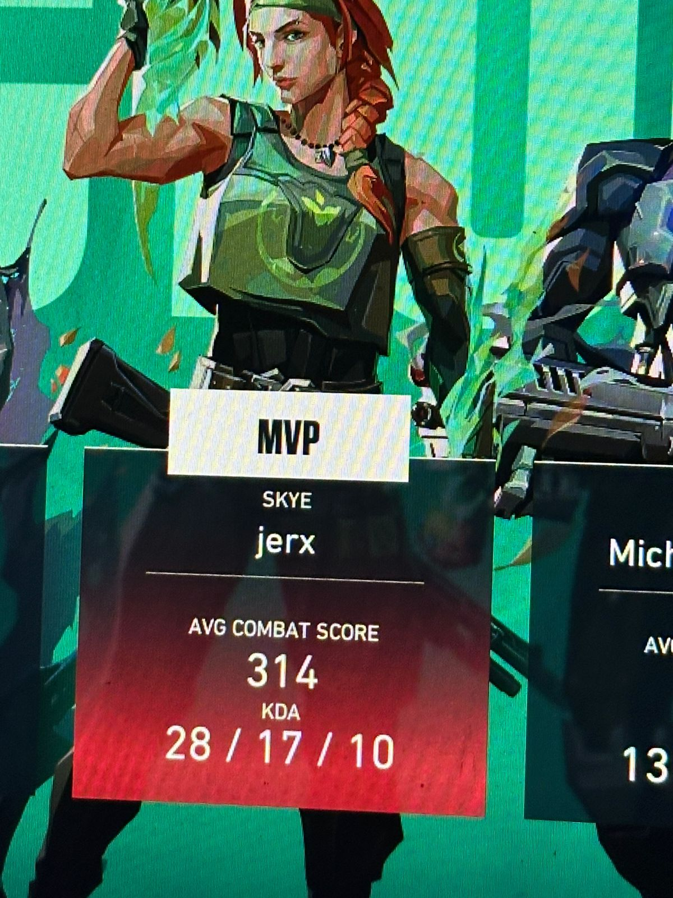
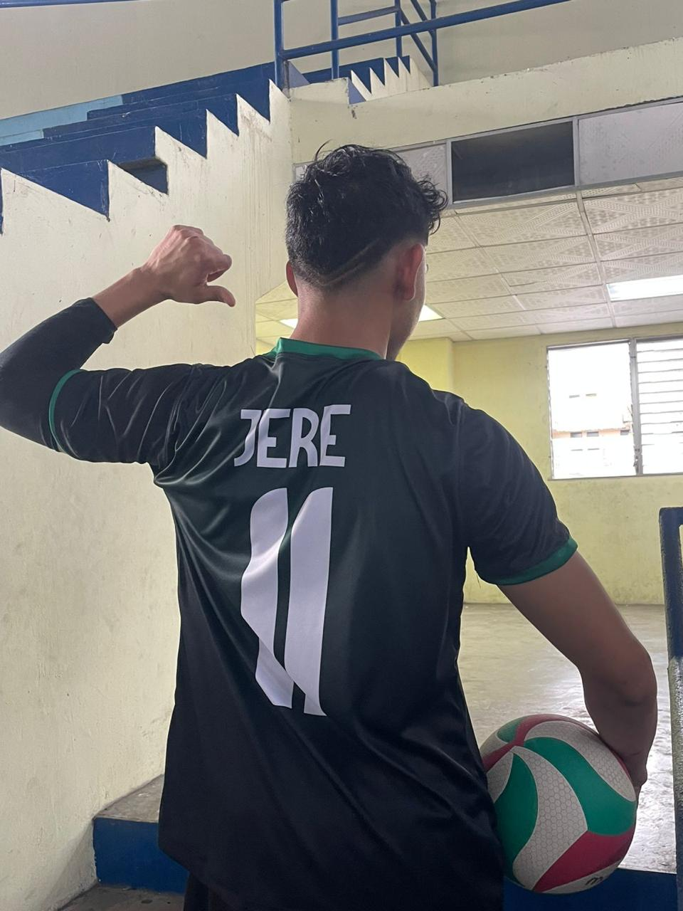
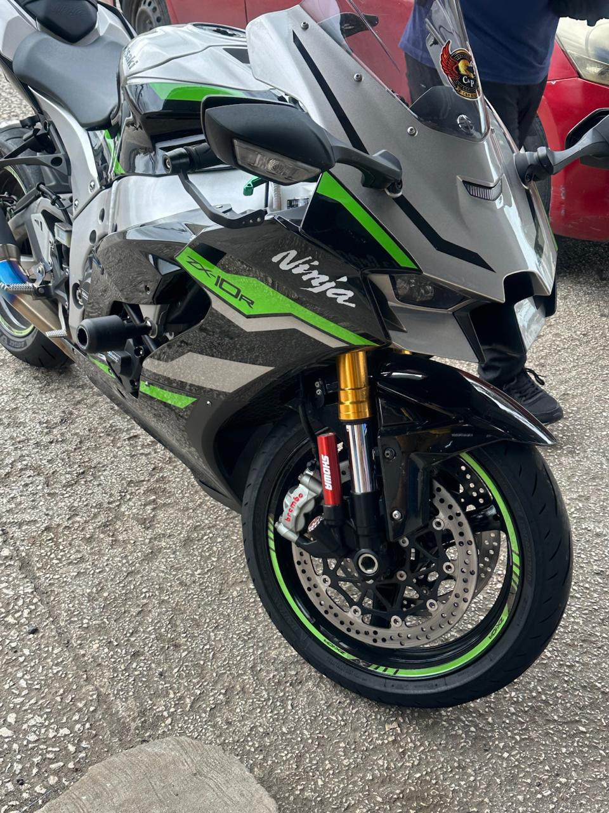

Presentación

Soy estudiante de último año de Ingeniería de Software en la Universidad Tecnológica de Panamá. Me apasiona construir cosas que funcionen bien, entender cómo se conectan los sistemas por dentro, y seguir aprendiendo tanto de tecnología como de temas totalmente distintos a ella.
Formación e intereses académicos
- Carrera: Ingeniería de Software, último año, UTP.
- Áreas de interés: desarrollo de software, bases de datos, sistemas backend.
- Tecnologías que me interesan: Java, entornos Oracle, desarrollo web.
- Temas que me gustaría aprender: deep learning y física, dos áreas que me atraen tanto por su complejidad como por su capacidad de explicar el mundo desde ángulos muy distintos.
Hobbies e intereses personales

Videojuegos
Juego Valorant de forma regular, tanto por competitividad como por el trabajo en equipo que exige.

Voleibol y fútbol
Juego voleibol para el equipo de la Facultad de Sistemas Computacionales, y también juego fútbol regularmente.

Motos
Me interesa el mundo de las motocicletas. Estoy por comprar una Gixxer 250SF, y a futuro me gustaría tener una R1M.
Lectura
Tengo una pequeña biblioteca en casa. Me encantan los thrillers y las novelas policiacas, como El psicoanalista, las historias de Sherlock Holmes y las de Hércules Poirot, soy lector fiel de Agatha Christie.